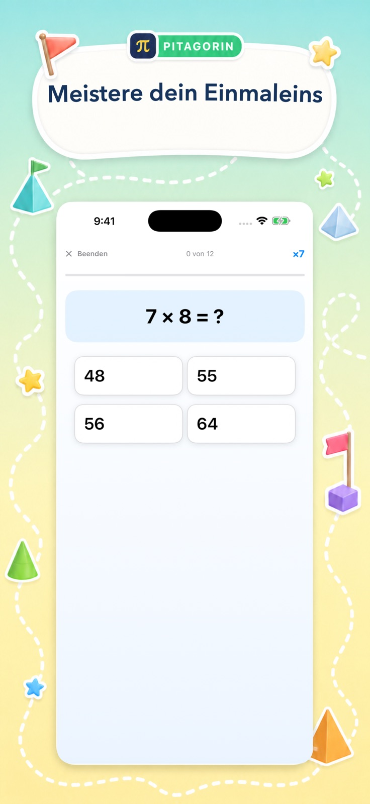

Das echte Erlebnis
Klar genug zum Lernen. Fröhlich genug zum Wiederkommen.
Das sind echte Pitagorin-Ansichten. Jede verbindet eine klare Matheaufgabe mit einladenden visuellen Signalen und einem verständlichen nächsten Schritt.
Vier Lernmomente
Vom schnellen Abruf zum geführten Denken.
Die Oberfläche passt sich dem Ziel an: lebendig für Herausforderungen, ruhig zum Lernen und deutlich für Algebra.




Für Konzentration gestaltet
Auch die Gestaltung hat eine Aufgabe.
Farbe lädt zum Mitmachen ein, während der Arbeitsbereich großzügig und lesbar bleibt.
Große Ausdrücke und viel Abstand machen die Aufgabe leicht auffindbar.
Wenige konkurrierende Aktionen zeigen, was als Nächstes zu tun ist.
Unterstützung erscheint, wenn sie nützt, statt jeden Versuch zu unterbrechen.
Punkte, Zeit, Lernstand und Verlauf geben dem Üben Richtung.
Der nächste Schritt
Probiere es selbst aus.
Lade Pitagorin kostenlos auf iPhone oder iPad oder entdecke zuerst alle Modi.